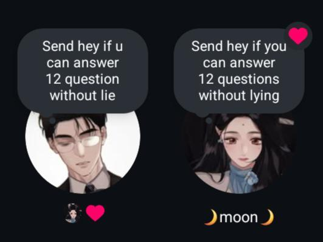
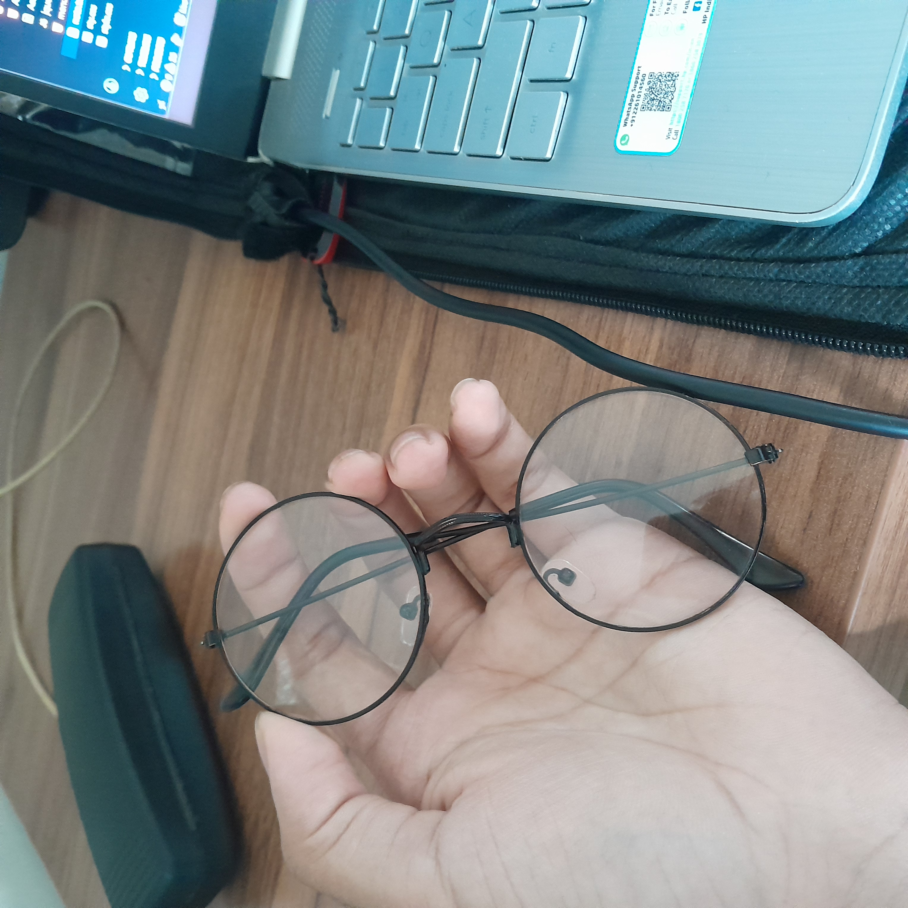
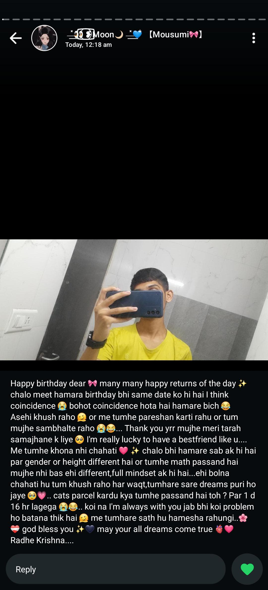
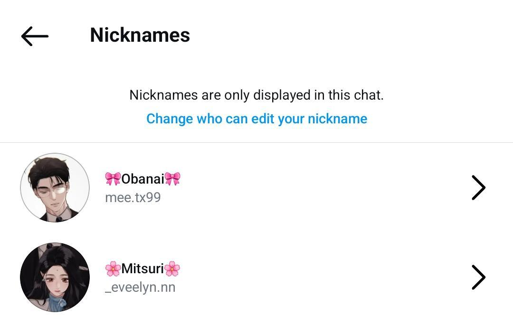
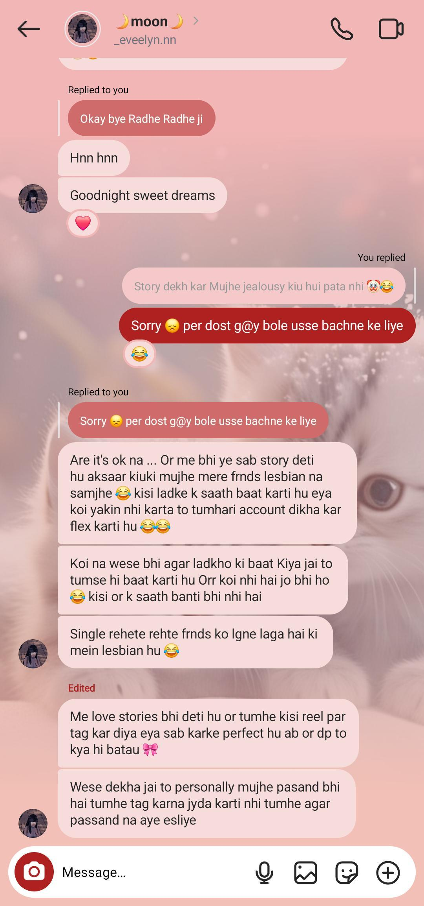

Maybe i have curse to remeber everything
A follow request came to me. I thought it was probably a guy trying to prank me, so I accepted it just for fun.
This was the day we became friends for the first time, and I still remember it. I hadn’t eaten, and you told me to eat first, so I actually went to eat. The next day, I asked if you had eaten or not, and you said no (like seriously? 😂).
That day, I was a little scared that someone might propose to you and you might accept. But I was confused about why I was feeling that way… I mean, I only considered you a friend, right?
At that time, I was out in the market with my mom and chatting with you. You asked, "Meet, can you give me your number? I want to post a status and flex a little that I have a male best friend." So I gave you my number and saved yours as “Moon” (with some weird emojis 😅). It looked funny, but it was okay. If my parents ever saw it, they would think it's just a guy friend (lol, if only they knew it’s a girl). I usually don’t share my number, but when my crush asked for it, I didn’t hesitate. I think I’ve told you this before on Ganesh Visarjan day. That day, we talked the whole day and it was really fun.

Do you remember our first matching profile picture? And that note: "Send 'hey' if you can answer 12 questions without lying." I had put that profile picture on WhatsApp first, and then you also used it even before we had each other’s numbers. We both matched our profile pictures on WhatsApp.
I was so excited about what to write for your birthday that I kept overthinking and fell asleep at 11, so I couldn’t wish you at 12. Then suddenly, I woke up at 1 AM, opened WhatsApp, and saw your status. I felt really happy because it was the first time someone had written so much for me. The problem was, I couldn’t write much on my status because I didn’t want my dad to check my phone, so I sent you a message instead. and uss din aap bohot sad baat kar rahe the muze woh acha nahi laga bilkul bhi nahi
Whatsapp mantion (first time) and i have no words just aww....!
During this time, we used to talk every night because I was at my grandmother’s house. Do you remember that one day when I ate food three times? 😂 And you told your mom that you were doing project work and would just make Maggi and eat it. That day was so much fun we talked for 5 hours on call and then continued texting. My recharge was about to end that day. We started talking at 9 PM and stopped at 6 AM in the morning. and yeah, at that time, you saved my name as "MI VIDA" aww
This was the day we proposed to each other for marriage
Meet: Whenever I think about marriage, your name comes to my mind first.
Moon: Will you marry me?
Meet: Yes, I will marry you.
There are so many things I want to say, but this much is enough for now. I know I’m saying some silly things, but I don’t even know where to start… there’s just so much I want to express.

Do you remember these glasses? you choose them for me on heet's birthday. whenever i wear them, i feel really good. it's gift from you. i consider it a gift because you chose these glasses for me.

look at the name i saved your contact number. thank you

i really liked that nickname.

i had mantioned my second id, and i wass telling you yhat it was me who tagged myself. and you were feeling jeolous